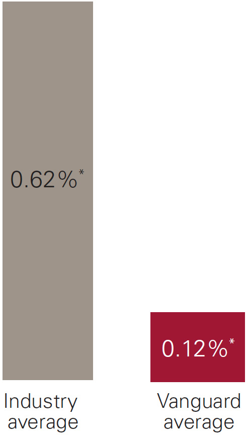
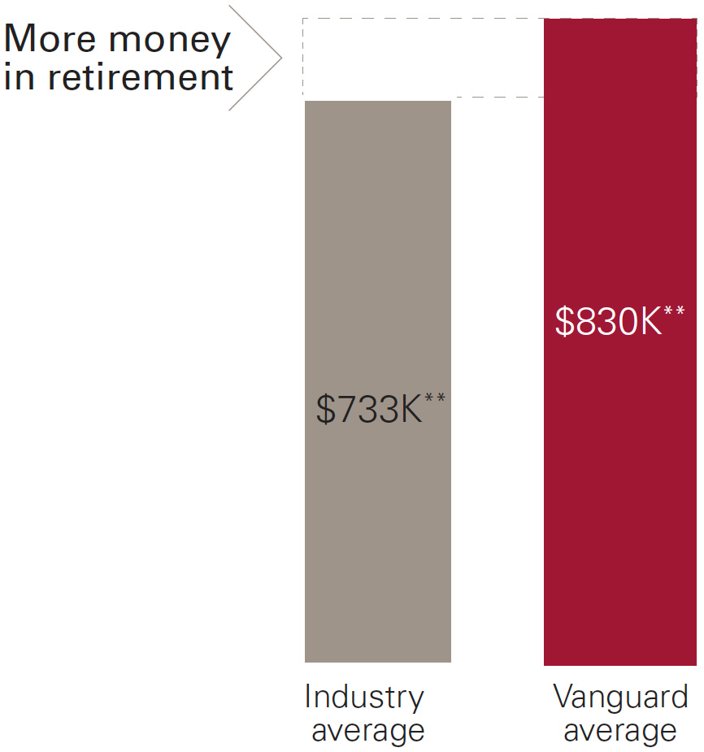

A fund lineup that consists of low-cost funds can make a difference. In our example below, you’ll see that using Vanguard funds can help your participants save more for retirement.
A plan participant who...
...will have more than $97,000 more in retirement.
Thanks in part to our low asset-weighted average expense ratio of 0.12% (versus the industry average of 0.62%), participants can enjoy investment cost savings that translate into higher account balances. This example reflects an industry-average account balance of $733,359 and a Vanguard account balance of $830,666—providing $97,307 more in retirement.
You can consult with your financial professional to determine the best lineup to meet the needs of your participants.
Cost difference
More than $97Ksup4
